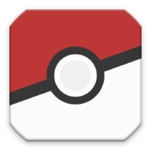

<mat-toolbar color="primary">
    <mat-toolbar-row>
       
       <a mat-button routerLink="/registro" (click)="registro()">Registro</a> <!-- Enlace al componente de registro -->
    </mat-toolbar-row>
</mat-toolbar>